Mục tiêu học tập
Học xong Chương 15, bạn cần làm được từng điều dưới đây. Nhãn cho biết mục nào trình bày nội dung đó.
- 15.1Mô tả vai trò của khí nhà kính trong biến đổi khí hậu và nguồn gốc của các khí đó.
- 15.1Giải thích cân bằng năng lượng của Trái Đất và cách các cơ chế phản hồi dương và âm ảnh hưởng đến khí hậu.
- 15.2Mô tả những thành phần nào của môi trường đang thay đổi do biến đổi khí hậu nhân sinh.
- 15.3Giải thích vì sao chúng ta biết về khí hậu trong quá khứ địa chất.
- 15.4Mô tả nguyên nhân của biến đổi khí hậu gần đây, đặc biệt vai trò của con người trong cân bằng khí hậu chung.
Cách dùng tài liệu
Các từ gạch chân là thuật ngữ chính. Bấm vào một từ, hoặc mở Thuật ngữ ở góc dưới bên phải, để đọc và tìm mọi định nghĩa của chương. Thuật ngữ được dịch sang tiếng Việt khoa học; thuật ngữ chưa thấy trong nguồn chính thức được ghi chú trong bảng thuật ngữ. Chương đi từ cách khí quyển quyết định nhiệt độ Trái Đất (15.1), đến bằng chứng khí hậu đang thay đổi (15.2), cách các nhà địa chất đọc khí hậu quá khứ từ đá, băng và hóa thạch (15.3), và cuối cùng là vì sao biến đổi hiện nay do con người gây ra (15.4).

Các hệ thống của Trái Đất
Một là một nhóm đối tượng và quá trình tương tác với nhau. nghiên cứu năm hệ thống:
- : đá
- : khí
- : nước
- : băng
- : sinh vật
Thay đổi ở một hệ thống ảnh hưởng đến các hệ thống khác, dù do chu kỳ tự nhiên hay do tác động (do con người).
Hiểu các hệ thống này tương tác ra sao giúp ta hiểu vì sao và bằng cách nào hoạt động của con người gây ra biến đổi khí hậu hiện nay, và phân biệt quá trình tự nhiên với quá trình do con người trong hồ sơ địa chất. Nhiệt độ và khí hậu Trái Đất phụ thuộc chủ yếu vào thành phần khí quyển, hoàn lưu đại dương và bề mặt đất liền: đá, sông băng và thực vật.
| Thời tiết | Khí hậu | |
|---|---|---|
| Là gì | Nhiệt độ và giáng thủy ngắn hạn | Khoảng dao động của nhiệt độ và giáng thủy, tính trung bình dài hạn cho một vùng |
| Thời gian | Vài ngày đến vài tuần | Thường lấy trung bình 30 năm làm mốc |
| Ví dụ | Mùa đông lạnh ở Hoa Kỳ năm 2013 và 2014 | Cũng những mùa đông đó, phần còn lại của Trái Đất ấm kỷ lục |
Vì vậy một mùa đông lạnh không có nghĩa là địa cầu đang lạnh đi. là những thay đổi và xu hướng chậm, dài hạn của nhiệt độ và giáng thủy, ở một vùng hoặc toàn Trái Đất.
15.1Nhiệt độ Trái Đất
Nếu không có khí quyển, nhiệt độ Trái Đất sẽ dao động cực lớn giữa ngày và đêm, như Mặt Trăng. Mặt Trăng gần như không có khí quyển: ban ngày khoảng 106 °C (224 °F), ban đêm khoảng −183 °C (−298 °F), chênh lệch khoảng 290 °C (522 °F). Khí quyển của Trái Đất điều hòa nhiệt độ của nó.
15.1.1 Thành phần khí quyển

Không khí gồm những gì
- 78% nitơ (N2)
- 21% oxy (O2)
- ~1% agon (Ar)
- < 1% : CO2, hơi nước, neon, heli, mêtan và các khí khác
- Hơi nước thay đổi nhiều theo vùng; trung bình khoảng 1%.
Các khí vết gồm những quan trọng, làm hành tinh ấm lên hay lạnh đi.
Trên thang thời gian địa chất, núi lửa thêm CO2 (cacbon điôxit, khí cacbonic) vào khí quyển, còn phong hóa lấy CO2 đi bằng cách chôn nó trong trầm tích. Các quá trình sinh học vừa thêm vừa lấy đi CO2.
Khí nhà kính hấp thụ một phần bức xạ hồng ngoại sóng dài do Trái Đất phát ra, nên nhiệt đó không bị mất vào vũ trụ. Càng nhiều khí nhà kính, càng nhiều nhiệt bị hấp thụ và hành tinh càng ấm. Các khí này ít ảnh hưởng đến bức xạ sóng ngắn hơn đến từ Mặt Trời.
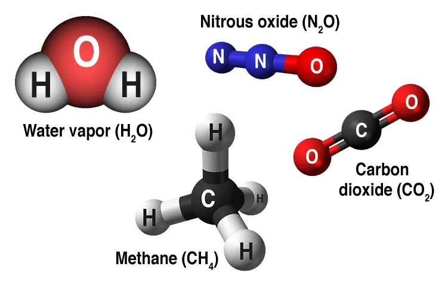
Vì sao CO2 quan trọng nhất
- Hơi nước là khí nhà kính dồi dào nhất, nhưng lượng của nó ít thay đổi theo thời gian.
- CO2 ít hơn nhiều, nhưng con người liên tục thải thêm do đốt , thay đổi sử dụng đất và phá rừng. Núi lửa cũng thêm CO2, nhưng với tốc độ không đáng kể so với con người.
- CO2 tồn tại trong không khí hàng trăm năm.
- Phần lớn CO2 thêm vào là cacbon "hóa thạch".
Than đá và dầu mỏ hình thành từ thực vật chết từ lâu. Những thực vật đó tạo mô bằng hàng triệu năm trước, và cacbon của chúng được tích lũy chậm trong đá và trầm tích. Đốt than và dầu giải phóng năng lượng Mặt Trời và CO2 hóa thạch đã tích trữ đó gần như tức thì, dù phải mất hàng triệu năm mới tích lũy được. Tốc độ giải phóng này là chìa khóa của biến đổi khí hậu hiện nay.
15.1.2 Chu trình cacbon
Trái Đất cân bằng cacbon qua hai liên kết với nhau, và hoạt động của con người đang nhanh chóng phá vỡ cân bằng đó.
| Chu trình cacbon sinh học | Chu trình cacbon địa chất | |
|---|---|---|
| Cách hoạt động | Sinh vật, chủ yếu là thực vật, lấy CO2 từ không khí bằng quang hợp; khi chết và phân hủy, cacbon trở lại không khí. | Một phần cacbon sinh học bị chôn vùi: thực vật thành than đá và dầu mỏ, mảnh hữu cơ thành đá phiến sét giàu hữu cơ, vỏ sinh vật thành đá vôi. |
| Tốc độ | Nhanh: vài năm đến vài chục năm | Rất chậm: thời gian địa chất |
| Lượng cacbon | Một phần nhỏ | Phần lớn cacbon của Trái Đất |
Quang hợp: CO2 + H2O + ánh sáng → đường + O2

Chu trình địa chất lưu giữ cacbon trong nhiều , mỗi bể giữ trong khoảng thời gian rất khác nhau (Hình 15.5):
- Than bùn, than đá và : chất hữu cơ thực vật, hàng nghìn đến hàng triệu năm.
- Đại dương: phong hóa khoáng vật silicat biến CO2 khí quyển thành hòa tan, lưu giữ hàng nghìn đến hàng chục nghìn năm.
- Đá cacbonat: sinh vật biển biến bicacbonat thành canxit, lưu giữ hàng chục đến hàng trăm triệu năm.
- Trầm tích: hợp chất cacbon lưu giữ trực tiếp hàng chục đến hàng trăm triệu năm; một phần thành dầu mỏ.
- Manti: trầm tích chứa cacbon bị mang xuống, hàng chục triệu đến hàng tỉ năm.
- Khí quyển: CO2 từ lòng Trái Đất thoát ra khi núi lửa phun, lưu lại vài năm đến vài chục năm.
Trong phần lớn lịch sử Trái Đất, núi lửa giải phóng cacbon với tốc độ xấp xỉ tốc độ các quá trình khác lưu giữ nó, và khí hậu khá ổn định. Cân bằng này đã bị phá vỡ nhiều lần:
| Mất cân bằng | Điều đã xảy ra | Hệ quả |
|---|---|---|
| Núi lửa hoạt động mạnh | Các đợt phun trào , khoảng 250 triệu năm trước | Nóng lên mạnh trong vài triệu năm |
| Tạo núi | Dãy Himalaya, hình thành trong khoảng 40 triệu năm, phơi ra diện tích đá khổng lồ cho phong hóa, nhất là fenspat | CO2 bị kéo từ không khí vào đại dương và trầm tích cacbonat; CO2 giảm đều góp phần gây các thời kỳ băng hà Pliocen–Pleistocen |
| Hoạt động của con người (không phải địa chất) | Chỉ trong vài thập niên, con người đã đốt lượng than, dầu và khí mà phải mất vài trăm triệu năm mới tích trữ được | Khí hậu thay đổi nhanh hơn bao giờ hết |
15.1.3 Hiệu ứng nhà kính
xảy ra vì khí nhà kính có trong khí quyển, và đó là lý do nhiệt độ toàn cầu đang tăng. Tên gọi xuất phát từ cách ánh nắng làm nóng nhà kính hay ô tô đóng kín: ánh sáng đi qua kính, biến thành nhiệt bên trong, và kính giữ nhiệt lại. Với Trái Đất, quá trình gồm ba bước (Hình 15.6):
- Ánh nắng đi vào. chủ yếu gồm tử ngoại (UV), ánh sáng khả kiến và hồng ngoại (IR). Khí quyển hấp thụ, tán xạ hoặc phản xạ một phần, nhưng khoảng một nửa đến được bề mặt.
- Bề mặt nóng lên. Bức xạ đến mặt đất biến thành nhiệt, như ánh nắng làm nóng mặt đường hay sàn gỗ. Bề mặt ấm sau đó phát ra bức xạ , chính là hơi nóng ta cảm thấy từ đống lửa hay bếp nóng.
- Khí nhà kính giữ nhiệt. Năng lượng rời Trái Đất ở bước sóng khác, dài hơn so với lúc đi vào. Khí nhà kính (CO2, hơi nước, mêtan và đinitơ oxit) hấp thụ hồng ngoại nhiệt đi ra này, nên năng lượng bị giữ lại trên đường đi ra, không phải đường đi vào. Càng nhiều khí nhà kính, càng nhiều hồng ngoại nhiệt bị giữ lại.
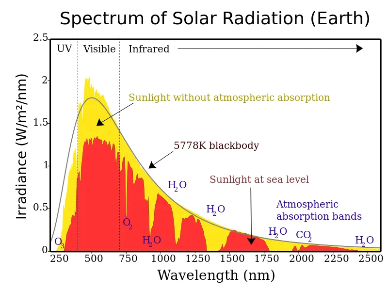
Khám phá: Mô phỏng tương tác hiệu ứng nhà kính (Viện Hàn lâm Khoa học Quốc gia Hoa Kỳ, tiếng Anh) ↗
15.1.4 Cân bằng năng lượng của Trái Đất
Dòng năng lượng Mặt Trời đi vào và nhiệt đi ra là (ngân sách năng lượng) của Trái Đất. Để nhiệt độ ổn định trong thời gian dài, năng lượng vào phải bằng năng lượng ra tính trung bình ở đỉnh khí quyển. Ánh nắng đến Trái Đất khá ổn định theo thời gian.
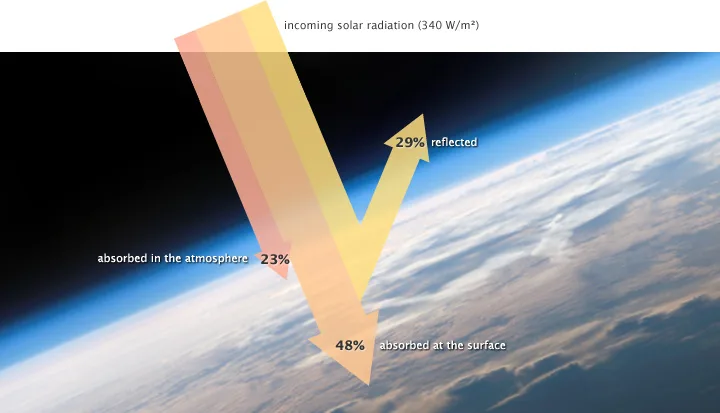

| Tỉ lệ | Số phận |
|---|---|
| ~29% | Phản xạ ra vũ trụ bởi mây, hạt trong không khí và bề mặt sáng như băng biển và tuyết |
| ~23% | Bị hơi nước, bụi và ozon trong khí quyển hấp thụ |
| ~48% | Đi qua và bị bề mặt hấp thụ |
| ~71% | Tổng phần hệ Trái Đất hấp thụ (23% + 48%) |
Năng lượng hấp thụ làm không khí và bề mặt nóng lên. Nếu Trái Đất chỉ hấp thụ, nó sẽ nóng mãi, như bồn rửa mở vòi mà tắc lỗ thoát. Nhưng Trái Đất càng ấm thì càng phát nhiều nhiệt ra vũ trụ, và đó là cơ chế chính ngăn nó nóng lên vô hạn. Khí nhà kính như một tấm màn: càng nhiều khí, càng nhiều nhiệt đi ra bị giữ lại và càng ít thoát đi.
Các yếu tố khác trong cân bằng

Những gì khác làm thay đổi cân bằng
- Mặt Trời: thêm năng lượng Mặt Trời sẽ làm Trái Đất ấm lên, nhưng thay đổi rất nhỏ.
- (albedo): ít băng và tuyết hơn thì đất và nước hấp thụ nhiều ánh nắng hơn.
- : bụi và hạt từ đốt than, động cơ diesel và núi lửa phản xạ ánh nắng, làm hành tinh mát đi.
- Tác động ròng của con người: làm ấm, vì khí nhà kính từ đốt nhiên liệu hóa thạch lấn át sol khí.
Cơ chế phản hồi
Một thay đổi của hành tinh có thể kích hoạt phản hồi làm thay đổi lớn hơn hoặc nhỏ đi (Hình 15.11).
- làm thay đổi ban đầu mạnh thêm. Băng biển: mất băng biển Bắc Cực làm giảm suất phản chiếu, nên không khí và đại dương hấp thụ thêm năng lượng. Đất đóng băng vĩnh cửu: khi khí hậu ấm lên, đất đóng băng vĩnh cửu (đất đóng băng quanh năm ở vĩ độ cao, chủ yếu ở Bắc Bán Cầu) tan ra; lớp chất hữu cơ dày gặp oxy và phân hủy, giải phóng CO2 và mêtan, gây ấm thêm, làm tan thêm đất đóng băng.
- làm thay đổi ban đầu yếu đi. Ngắn hạn: thêm CO2 được dự đoán giúp tán rừng phát triển, hấp thụ thêm CO2. Dài hạn: thêm CO2 nghĩa là thêm và , đưa bicacbonat và các ion khác ra biển để lưu giữ trong trầm tích.
Cân bằng đang bị lệch
Hiện tượng nóng lên toàn cầu là bằng chứng cân bằng năng lượng của Trái Đất không còn cân bằng: các tác động làm tăng nhiệt độ Trái Đất hiện lớn hơn các tác động làm giảm.
Tự kiểm tra: câu hỏi Mục 15.1 trong sách ↗
15.2Bằng chứng về biến đổi khí hậu gần đây
Khí hậu đã nhiều lần thay đổi vì nguyên nhân tự nhiên (Học phần 14.5.1 và 15.3), nhưng đồng thuận khoa học là hoạt động của con người đang gây ra biến đổi khí hậu rất nhanh hiện nay, một ý tưởng được nêu từ hơn 75 năm trước. Mục này trình bày bằng chứng về .
Xem: Bằng chứng biến đổi khí hậu, sáu phút (Đại học bang North Carolina, tiếng Anh) ↗
15.2.1 Nhiệt độ toàn cầu tăng
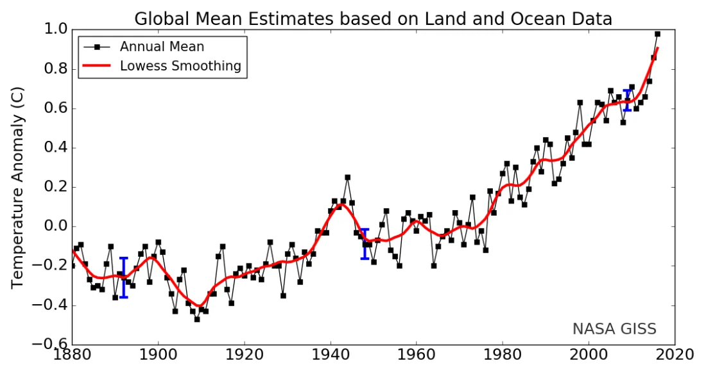
Từ năm 1880, nhiệt độ bề mặt trung bình của Trái Đất có xu hướng tăng, với phần lớn mức ấm lên diễn ra từ 1970. Nhiệt độ bề mặt gồm cả đất liền và đại dương, vì nước hấp thụ phần lớn nhiệt bị giữ thêm.
- là hiệu giữa nhiệt độ đo được và nhiệt độ trung bình của một . Đồ thị dùng 1951–1980; một lựa chọn phổ biến khác là thế kỷ 1900–2000. Thời kỳ tham chiếu dài từ 30 năm trở lên.
- Dị thường dương nghĩa là ấm hơn trung bình tham chiếu. Chương ghi +1,25 °C cho năm 2015 và −0,28 °C cho năm 1950 so với 1900–2000. Chênh lệch 1,25 °C tương ứng chênh lệch 2,25 °F (xem Ghi chú kiểm chứng).
Đại dương nhận phần lớn nhiệt
- Đại dương phủ khoảng 70% Trái Đất và có rất cao.
- Chúng đã hấp thụ khoảng 80–90% lượng nhiệt thêm do hoạt động của con người.
- Lớp 700 m (2.300 ft) trên cùng đã ấm thêm khoảng 0,17 °C (0,3 °F) từ năm 1969.
- Nước chỉ ấm lên chút ít dù hấp thụ nhiều nhiệt; không khí, với nhiệt dung riêng thấp hơn, ấm lên nhiều hơn dù hấp thụ ít hơn.
"Khoảng chững" 1998–2013
- Một số người cho rằng khí nhà kính không gây nóng lên vì nhiệt độ bề mặt hầu như không tăng từ 1998 đến 2013.
- Nhưng thay đổi hoàn lưu đại dương quy mô thập niên, tương tự La Niña, đã đẩy nước ấm xuống sâu.
- Cộng nhiệt đó của đại dương trở lại thì sự ấm lên hiện rõ.
- Việc lưu giữ chỉ là tạm thời: 2014–2016 lập kỷ lục, và 15 trong 16 năm đầu thế kỷ 21 là những năm nóng nhất từng ghi nhận.
Xem: Dị thường nhiệt độ toàn cầu từ 1880 (hoạt hình NASA) ↗ · Nhiệt dung của đại dương, 3 phút (NASA JPL, tiếng Anh) ↗
15.2.2 Cacbon điôxit
Khí nhà kính nhân sinh, chủ yếu là CO2, đã tăng từ Cách mạng Công nghiệp, khi việc đốt nhiên liệu hóa thạch tăng vọt. Mức hiện nay chưa từng có trong 800.000 năm qua theo ghi nhận của lõi băng.
- CO2 tăng khoảng 40% từ 1750 đến 2011, và tốc độ tăng nhanh nhất trong thập niên gần nhất.
- Từ 1750 đến 2011, khoảng 2.040 gigatấn CO2 được thải ra: khoảng 40% ở lại khí quyển, khoảng 60% vào thực vật và đất trên đất liền hoặc vào đại dương.
- Trong đời của phần lớn người trẻ, CO2 khí quyển đã tăng khoảng 50 ppm, tức 15%.

- Charles Keeling, nhà hải dương học tại Viện Hải dương học Scripps, là người đầu tiên đo CO2 khí quyển đều đặn.
- Đài quan sát Mauna Loa đo CO2 liên tục bằng phương pháp của ông từ năm 1958.
- Răng cưa: chu kỳ hằng năm, vì thực vật Bắc Bán Cầu hấp thụ CO2 vào mùa hè và ngủ đông vào mùa đông.
- Xu hướng: tăng đều và ngày càng dốc; chính tốc độ tăng cũng đang tăng.
Số đo từ nhiều trạm cho thấy CO2 thay đổi theo vĩ độ: phần lớn nguồn CO2 của con người ở Bắc Bán Cầu, nơi có phần lớn đất liền và phần lớn các nước phát triển. Xem số đo mới nhất tại trang Keeling Curve.
Xem: CO2 khí quyển, gần đây và trong 800.000 năm (NOAA, tiếng Anh) ↗
15.2.3 Sông băng tan và băng biển co lại
Sông băng là băng tồn tại quanh năm trên đất liền; núi băng trôi là băng nổi, có thể vỡ ra từ sông băng (Học phần 14). Sông băng núi cao, dải băng và băng biển đều đang tan.
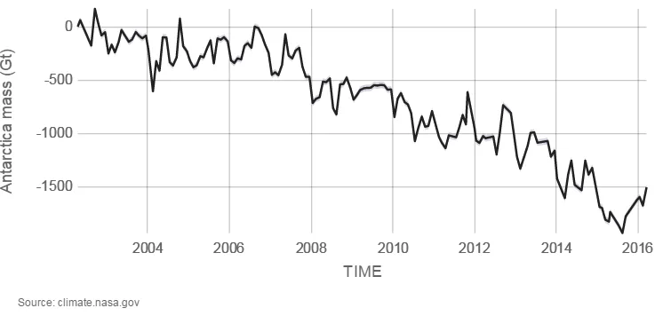
Mất băng qua các con số
- Nam Cực: mất khoảng 118 gigatấn băng mỗi năm.
- Greenland: mất khoảng 281 gigatấn mỗi năm.
- 1 tấn = 1.000 kg; 1 gigatấn = 1 tỉ tấn, hơn 2 nghìn tỉ pound.
- Hầu hết sông băng núi cao lớn đang co lại, mỏng đi và lùi dần, với tốc độ chưa từng thấy kể từ khi có số liệu sông băng tốt vào thập niên 1940.
Trước khi con người làm ấm khí hậu, có sông băng tiến, có sông băng lùi. Nay lớp tuyết mùa xuân đang giảm và băng biển đang co lại. Phần lớn băng biển nằm quanh Bắc Cực, nơi chỉ có Bắc Băng Dương và băng của nó. Tỉ lệ băng Bắc Cực già nhất (trên bốn tuổi) giảm từ 20% năm 1985 xuống 3% năm 2015.
Khám phá: NASA Global Ice Viewer (tiếng Anh) ↗ · Xem: 25 năm băng biển Bắc Cực biến mất (NOAA) ↗
15.2.4 Mực nước biển dâng
Mực nước biển đang dâng khoảng 3,4 mm (0,13 in) mỗi năm, và đã dâng 0,19 m (7,4 in) từ 1901 đến 2010. Hai nguyên nhân chính là sông băng tan và sự của nước biển: chất rắn, lỏng và khí nở ra khi nóng lên.
Xem: Thí nghiệm giãn nở vì nhiệt với quả cầu và vòng kim loại, 30 giây (NCSSM) ↗
15.2.5 Axit hóa đại dương
Trong lượng CO2 con người thải thêm từ 1750, khoảng 40% ở lại khí quyển, phần còn lại vào đại dương và thảm thực vật; riêng đại dương đã hấp thụ khoảng 30%. Điều này gây ra :
Từ CO2 đến vỏ mỏng hơn
- CO2 hòa tan trong nước biển tạo axit cacbonic: CO2 + H2O → H2CO3.
- Đại dương trở nên axit hơn: của nó giảm.
- Axit tấn công canxi cacbonat, giống như axit clohydric làm canxit (đá vôi) sủi bọt.
- Sinh vật tạo vỏ canxi cacbonat gặp khó khăn: vỏ mỏng đi ở một số loài (pteropod) và (foraminifera), và rạn san hô phát triển chậm lại.
Những sinh vật nhỏ bé này nằm ở đáy chuỗi thức ăn biển. Axit hóa kết hợp với nước ấm hơn và ít oxy hơn được dự đoán sẽ ảnh hưởng nghiêm trọng đến hệ sinh thái biển và nghề cá mà con người dựa vào làm nguồn thực phẩm.
15.2.6 Hiện tượng thời tiết cực đoan
Thời tiết cực đoan, như bão, mưa lớn và nắng nóng, đang tăng và mạnh hơn. Không khí ấm hơn chứa được nhiều hơi ẩm hơn, làm tăng khả năng xảy ra hiện tượng cực đoan.
- Bão hình thành trên nước biển ấm. Từ thập niên 1980, bão mạnh hơn và kéo dài hơn; chương còn nói bão nhiều hơn, điều này kém chắc chắn hơn (xem Ghi chú kiểm chứng).
- Giáng thủy ở lục địa Hoa Kỳ (trừ Alaska, Hawaii) tăng khoảng 10% từ 1910, phần lớn trong các trận mưa lớn. Mức tăng không đều: miền bắc được dự đoán ẩm hơn, còn vùng Tây Nam vốn khô sẽ khô hơn.
- Nắng nóng tăng lên, và nhiệt độ cao đã ảnh hưởng đến năng suất cây trồng ở các vĩ độ phía bắc.
Tự kiểm tra: câu hỏi Mục 15.2 trong sách ↗
15.3Biến đổi khí hậu tiền sử
Khí hậu Trái Đất đã thay đổi rất nhiều. Trong Đại Trung Sinh, thời đại khủng long, khí hậu ấm hơn nhiều và CO2 dồi dào. Suốt Đại Tân Sinh, 66 triệu năm gần đây, khí hậu dần lạnh đi.
15.3.1 Các thời kỳ băng hà trong quá khứ
Trong lịch sử địa chất, khí hậu thay đổi chậm qua hàng triệu năm. Trước thời kỳ băng hà Pliocen–Đệ Tứ hiện nay, đã có một số thời kỳ băng hà lớn khác:
- (cuối Liên đại Thái Cổ đến đầu Nguyên Sinh). Thường gắn với : oxy mới xuất hiện có lẽ đã phản ứng với mêtan, một khí nhà kính mạnh, làm hành tinh lạnh đi.
- Các thời kỳ băng hà cuối Nguyên Sinh, thuộc giả thuyết . Có bằng chứng sông băng ở cả vĩ độ thấp.
- Băng hà Ande-Sahara (cuối kỷ Ordovic), trùng với một đợt tuyệt chủng lớn.
- Kỷ băng hà Karoo (Pennsylvania). Wegener dẫn nó làm bằng chứng Pangaea trôi qua Nam Cực. Gắn với oxy tăng và CO2 giảm khi thực vật trên cạn tiến hóa và lan rộng.
- Đại Tân Sinh lạnh đi: sông băng trên châu Nam Cực từ khoảng 35 triệu năm trước, rồi dải băng Bắc Bán Cầu, và các thời kỳ băng hà Pleistocen.
Các thời kỳ băng hà lớn trước đâyThời kỳ "nhà băng" hiện nay (Tân Sinh)
Trái Đất quả cầu tuyết
Đá khoảng 700 triệu năm tuổi khắp thế giới mang dấu vết sông băng ngay gần xích đạo. Ở nhiều vùng, đá vôi (thường hình thành ở biển nhiệt đới) và trầm tích băng hà (thường ở nơi lạnh) nằm cùng nhau. Một ví dụ là đảo Antelope trong Hồ Muối Lớn, Utah, nơi đá vôi xen kẽ với băng hà.
Trái Đất quả cầu tuyết (còn tranh cãi)
- Hiệu ứng suất phản chiếu mất kiểm soát: băng tuyết phản xạ ánh nắng và lan từ hai cực về xích đạo.
- Đất liền và đại dương đóng băng hoàn toàn, hoạt động sinh học sụp đổ.
- CO2 không vào được đại dương đóng băng, nên băng chỉ tan khi núi lửa đẩy CO2 lên đủ cao; một số nghiên cứu ước tính khoảng 350 lần mức hiện nay.
Vì sao còn tranh cãi
- Sự sống vẫn tồn tại, nên việc đóng băng hoàn toàn bị nghi ngờ.
- Giả thuyết đối lập (Slushball Earth) cho rằng một phần đại dương xích đạo vẫn không đóng băng.
- Các nhà khoa học còn bất đồng về độ ổn định của cực từ, về việc biến chất sau này đã làm thay đổi đá ra sao, và về cách đọc bằng chứng.
Đại Tân Sinh lạnh đi

Đại Tân Sinh bắt đầu ấm. Thế Eocen sớm, khoảng 50 đến 55 triệu năm trước, là thời ấm nhất, có một đợt tăng vọt ngắn gọi là (PETM); Nam Cực và Greenland không có băng. Từ thế Eocen, các sự kiện kiến tạo đã làm hành tinh lạnh đi đều đặn:
| Khi nào | Sự kiện | Làm Trái Đất lạnh đi thế nào |
|---|---|---|
| Từ ~50 tr. năm | Ấn Độ va chạm châu Á, nâng dãy Himalaya | Phong hóa khoáng vật silicat tăng, nhất là fenspat, tiêu thụ CO2 và làm yếu hiệu ứng nhà kính |
| ~40 tr. năm | Nam Mỹ và châu Nam Cực tách ra, mở eo biển Drake | chảy tự do từ tây sang đông, cô lập Nam Đại Dương khỏi các đại dương ấm hơn; đến khoảng 35 triệu năm trước (thế Oligocen) sông băng hình thành trên châu Nam Cực |
| ~15 tr. năm (theo chương) | Núi lửa tạo nên eo đất Panama, nối hai châu Mỹ | Chặn dòng chảy giữa Thái Bình Dương và Đại Tây Dương, giảm truyền nhiệt về cực; băng Nam Cực mở rộng (xem Ghi chú kiểm chứng về niên đại) |
| ~5 tr. năm (theo chương) | Dải băng bắt đầu phát triển ở Bắc Mỹ và Bắc Âu (thế Pliocen) | Băng phản xạ nhiều hơn gây lạnh thêm: phản hồi dương băng – suất phản chiếu |
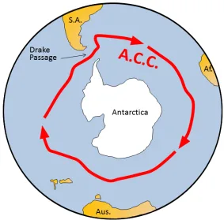

Các thời kỳ băng hà Pleistocen
- Phần khắc nghiệt nhất của thời kỳ băng hà hiện nay là 1 triệu năm cuối của thế Pleistocen.
- Nhiệt độ dao động trong khoảng gần 10 °C (18 °F) qua 40.000 đến 100.000 năm, và các dải băng mở rộng, thu hẹp theo.
- Các dao động được điều nhịp bởi những thay đổi nhỏ của quỹ đạo Trái Đất, tức (Học phần 14). Trong triệu năm qua, chu kỳ băng hà lặp lại khoảng mỗi 100.000 năm.
- Các thời kỳ ấm trong một kỷ băng hà là ; có năm hoặc sáu gian băng trong 500.000 năm qua, gần nhất là hiện nay. Các pha ấm ngắn, ôn hòa hơn trong một thời kỳ băng hà là (interstadial).
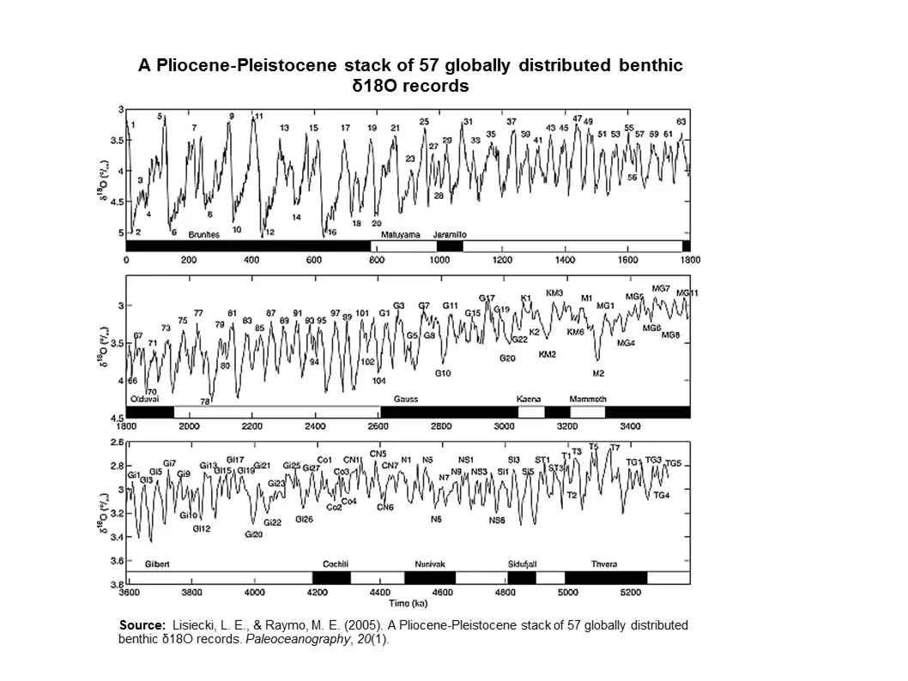
| Sự kiện | Khi nào | Điều đã biết |
|---|---|---|
| Khoảng 12.000 năm trước | Đợt lạnh được công nhận rộng rãi ở Bắc Bán Cầu, nhưng thời điểm khác nhau giữa các nơi và khó tìm thấy ở Nam Bán Cầu | |
| Khoảng 6.000 năm trước | Đợt ấm không ấm hơn ở mọi nơi, không ấm bằng hiện nay, và không ấm cùng lúc ở mọi nơi |
15.3.2 Chỉ thị gián tiếp của khí hậu quá khứ
Không ai đo nhiệt độ từ hàng triệu năm trước, nên các nhà địa chất dùng (proxy): dấu hiệu sinh học, hóa học hoặc vật lý lưu giữ trong đá, trầm tích hay băng, giống như dấu vân tay của điều kiện xưa. Chúng là chỉ thị gián tiếp của khí hậu.
| Chỉ thị | Tìm thấy trong | Ghi lại điều gì | Khoảng thời gian |
|---|---|---|---|
| Trầm tích băng hà (diamictit, ) | Đá, ví dụ hệ tầng Mineral Fork, Utah | Các thời kỳ băng hà xưa | Nguyên Sinh và Cổ Sinh |
| Đồng vị oxy | Vỏ trùng lỗ trong lõi biển sâu; lõi băng | Nhiệt độ biển sâu và thể tích băng | Tân Sinh (lõi biển); 800.000 năm (băng) |
| Đồng vị bo | Vỏ trùng lỗ phù du | pH đại dương, từ đó suy ra CO2 xưa | Khoảng 60 triệu năm |
| Bọt khí | Lõi băng Nam Cực và Greenland | Thành phần không khí xưa, gồm CO2 | 800.000 năm |
| Quần hợp vi hóa thạch | Lõi trầm tích | Điều kiện nước lạnh hay nước ấm | Tân Sinh |
| Vòng gỗ | Cây sống và cây chết | Năm ẩm hay khô, ấm hay lạnh | Hàng nghìn năm |
| Quần hợp phấn hoa | Lõi trầm tích hồ | Thảm thực vật xưa, từ đó suy ra khí hậu | Ví dụ: 125.000 năm |
Ngoài ra còn có ghi chép lịch sử của con người, số liệu đo đạc gần đây, trầm tích hồ, trầm tích hang động và san hô.
Lõi trầm tích: đồng vị oxy bền

Lõi biển sâu
- Chương trình Khoan Đại dương quốc tế khoan lấy lõi trầm tích tích tụ liên tục dưới đáy biển.
- Lõi chứa vỏ trùng lỗ sống ở đáy (sinh vật đáy) trong 66 triệu năm qua.
- Đồng vị cacbon và oxy bền của vỏ ghi lại nhiệt độ biển sâu và thể tích băng lục địa.
Oxy có hai bền chính: 16O phổ biến, nhẹ và 18O hiếm hơn, nặng. Cả hai có trong nước và trong canxi cacbonat của vỏ trùng lỗ. Tỉ số 18O trên 16O, ký hiệu , phản ánh thể tích băng (Hình 15.20):
- Nước chứa 16O nhẹ bay hơi dễ hơn, nhất là từ nước ấm, làm nước biển bề mặt giàu 18O hơn một chút.
- Khi hơi nước trôi về phía cực, nước chứa 18O nặng ngưng tụ và rơi xuống trước, nên hơi nước còn lại nghèo 18O.
- Trong thời kỳ lạnh, giáng thủy giàu 16O này bị khóa lại thành băng trên đất liền. Các dải băng dày hơn một dặm (1,6 km) đã phủ phần lớn Bắc Mỹ cách đây chỉ khoảng 14.000 năm.
- Đại dương, cùng vỏ trùng lỗ lớn lên trong đó, trở nên giàu 18O. δ18O trong vỏ cao hơn nghĩa là nhiều băng hơn và khí hậu lạnh hơn.
Các lõi liên tục ghi lại những hóa thạch này theo từng lớp, nên cho ta hồ sơ của các thời kỳ băng hà, gian băng và gian băng phụ (Hình 15.21).
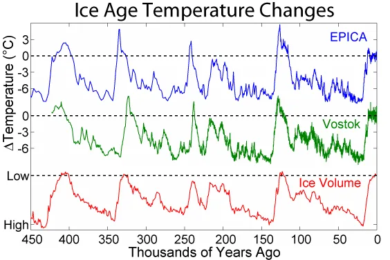
Lõi trầm tích: đồng vị bo và độ axit
Bo có hai đồng vị, 11B và 10B, và tỉ lệ của chúng trong bo hòa tan phụ thuộc pH. Vì thêm CO2 nghĩa là thêm axit cacbonic và pH thấp hơn, đồng vị bo trong vỏ trùng lỗ phù du tiết lộ CO2 khí quyển xưa trong khoảng 60 triệu năm:
- ~60 triệu năm (đầu Tân Sinh): CO2 trên 2.000 ppm, pH đại dương thấp hơn.
- ~55–40 triệu năm: CO2 bắt đầu giảm, có thể vì ít CO2 thoát ra từ sống núi đại dương, núi lửa và đai biến chất hơn, và nhiều cacbon bị chôn vùi hơn nhờ hút chìm và phong hóa dãy Himalaya đang nâng lên.
- ~24 triệu năm (thế Miocen): CO2 dưới 500 ppm.
- 800.000 năm gần đây: CO2 không vượt quá khoảng 300 ppm (cho đến thời công nghiệp).
Cacbon điôxit trong lõi băng

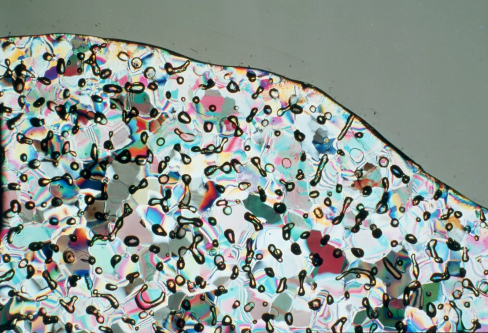
Lõi băng khoan từ các dải băng Nam Cực và Greenland cho hồ sơ hóa học chi tiết và trực tiếp hơn trong 800.000 năm qua:
- Tuyết tích tụ thành lớp hằng năm. δ18O của chúng cho biết nhiệt độ, như trên.
- Khi tuyết biến thành băng, nó giữ lại những bọt khí nhỏ. Các mẩu băng nhỏ được nghiền, và không khí cổ được đưa vào để đo thành phần hóa học, gồm cả CO2.
- Trong 800.000 năm qua, CO2 lên tới khoảng 300 ppm vào thời ấm và xuống khoảng 170–185 ppm vào thời lạnh. Hiện nay là trên 420 ppm (Hình 15.28).

Vi hóa thạch đại dương
Vi hóa thạch như trùng lỗ, tảo cát và trùng phóng xạ cũng là chỉ thị gián tiếp. Các nhóm loài gặp cùng nhau gọi là . Một lớp của lõi trầm tích có thể chứa quần hợp nước lạnh (thời băng hà), lớp khác chứa quần hợp nước ấm.
Xem: Bằng chứng khí hậu từ trầm tích (video, tiếng Anh) ↗
Vòng gỗ
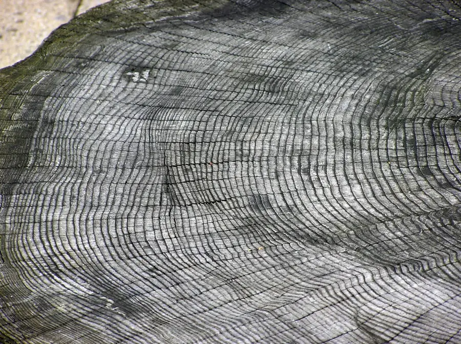
Đọc vòng gỗ
- Mỗi năm cây mọc một vòng, gồm phần sáng và phần tối.
- Vòng rộng: năm ẩm hơn. Vòng hẹp, sát nhau: năm khô, lạnh hơn.
- Một số cây sống vài nghìn năm, nên vòng gỗ giúp tái dựng nhiệt độ, giáng thủy, thảm thực vật, dòng chảy sông và nhiều điều khác của một vùng: nghiên cứu .
- Gỗ chết, như xà nhà trong phế tích người Pueblo, kéo dài hồ sơ và cho thấy những đợt hạn hán dài có thể giải thích vì sao làng bị bỏ hoang.
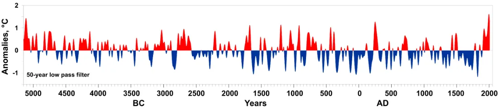
Phấn hoa

Phấn hoa làm chỉ thị
- Hạt phấn của mỗi loài thực vật có hoa trông rất riêng dưới kính hiển vi.
- Phấn hoa được lưu giữ trong trầm tích hồ tích tụ thành lớp hằng năm.
- Quần hợp phấn hoa hóa thạch (ví dụ vân sam, thông, sồi), định tuổi bằng phương pháp phóng xạ, cho biết cây nào từng mọc ở đó, và mỗi loài ưa một kiểu khí hậu.
- Ở phía đông dãy Cascade, Tây Bắc Thái Bình Dương (Hoa Kỳ), phấn hoa theo dõi trong 125.000 năm qua hai thời kỳ băng hà cho thấy thảm thực vật thay đổi giữa thời băng hà và gian băng (Whitlock và Bartlein 1997).
Tự kiểm tra: câu hỏi Mục 15.3 trong sách ↗
15.4Nguyên nhân biến đổi khí hậu do con người
Các biến đổi khí hậu tiền sử diễn ra chậm, qua nhiều triệu năm. Biến đổi hiện nay nhanh và phần lớn do con người gây ra. Các nhà khoa học đi đến kết luận này từng bước:
- Các nhà khoa học nghi ngờ khí nhà kính do con người thải ra sẽ làm thay đổi khí hậu, vì mọi lần trong quá khứ địa chất, thay đổi các khí này đều làm vậy.
- Đo đạc có hệ thống xác nhận CO2 do con người thải ra đang tích tụ trong khí quyển, rừng và đại dương.
- Hàng nghìn nghiên cứu mặt đất cùng đo đạc vệ tinh liên tục trên đất liền và đại dương cho thấy sự ấm lên như dự đoán: được khẳng định.
Thuyết này cho rằng con người đang gây ra phần lớn biến đổi khí hậu hiện nay do đốt nhiên liệu hóa thạch như than đá, dầu mỏ và khí thiên nhiên. Như mọi lý thuyết, nó có thể phát triển khi có số liệu và phương pháp mới; nó thể hiện hiểu biết hiện tại của ngành.
15.4.1 Đồng thuận khoa học
Đồng thuận
- Tuyệt đại đa số nghiên cứu khí hậu cho thấy hoạt động của con người đang làm khí hậu thay đổi nhanh, sẽ gây thiệt hại môi trường nghiêm trọng.
- Các nghiên cứu bình duyệt cho thấy 97% nhà khoa học khí hậu đồng ý rằng sự ấm lên do hoạt động của con người.
- Không có giải thích nào khác cho mối liên hệ giữa phát thải khí nhà kính của con người và khí hậu đang thay đổi.
- Các tổ chức khoa học hàng đầu đều đồng ý, gồm Viện Hàn lâm Khoa học Quốc gia Hoa Kỳ, do Quốc hội lập năm 1863 để tư vấn độc lập, khách quan về khoa học.
Dấu vân tay đồng vị
- Nhiên liệu hóa thạch đến từ thực vật sống hàng triệu năm trước, có tỉ số 13C/12C khác với không khí ngày nay. (Đây là các đồng vị bền; 14C phóng xạ không dùng ở đây.)
- Băng Nam Cực cho thấy dấu hiệu đồng vị cacbon ổn định từ khoảng năm 1000 đến 1800, thay đổi dần sau 1800, và nhanh hơn sau 1950.
- Khi CO2 hóa thạch hòa vào, dấu hiệu của không khí ngày càng giống nhiên liệu hóa thạch. này được dùng từ thập niên 1980.
15.4.2 Nguồn khí nhà kính do con người
Phát thải khí nhà kính của con người tăng từ thời tiền công nghiệp cùng tăng trưởng kinh tế và dân số. CO2 đang ở mức chưa từng thấy trong ít nhất 800.000 năm (Hình 15.28):
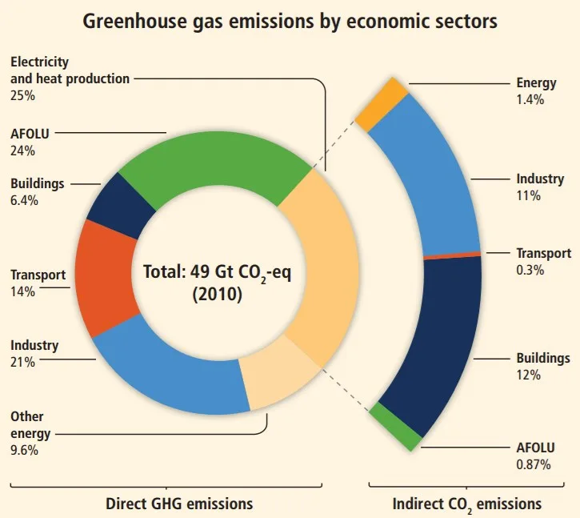
| Ngành | Tỉ lệ |
|---|---|
| Sản xuất điện và nhiệt | 25% |
| Nông nghiệp, lâm nghiệp và sử dụng đất khác (AFOLU) | 24% |
| Công nghiệp | 21% |
| Giao thông, gồm ô tô | 14% |
| Sản xuất năng lượng khác | 9,6% |
| Nhà ở và công trình | 6,4% |
- Đốt nhiên liệu hóa thạch và các quá trình công nghiệp gây ra khoảng 78% mức tăng phát thải khí nhà kính từ 1970 đến 2010.
- Khoảng một nửa tổng phát thải CO2 của con người từ 1750 diễn ra trong 40 năm gần đây, và khoảng 40% lượng phát thải đã ở lại khí quyển.
- Phát thải tính theo (CO2 tương đương) cho phép cộng các khí khác nhau.
- Chính sách và hiệp định đã giảm phát thải ở một số nơi, nhưng tăng trưởng kinh tế ở các nước đang phát triển làm tổng phát thải toàn cầu tăng; giai đoạn 2000–2010 có mức tăng lớn nhất kể từ 1970.
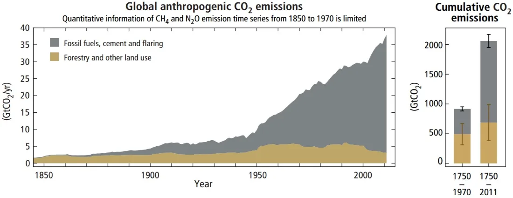
Dù có đồng thuận khoa học, làm chậm biến đổi khí hậu vẫn cần hành động chính trị.
Số liệu trực tiếp: CO2 hằng ngày ↗ · Tự kiểm tra: câu hỏi Mục 15.4 trong sách ↗
Tóm tắt
Để khí hậu Trái Đất ổn định, ánh nắng đi vào và nhiệt đi ra phải cân bằng. Khí nhà kính hấp thụ hồng ngoại nhiệt do bề mặt được nắng làm ấm phát ra, giữ nhiệt lại: đó là hiệu ứng nhà kính. Con người đang thải thêm khí nhà kính, trước hết là CO2 từ nhiên liệu hóa thạch, nên cân bằng năng lượng bị lệch và Trái Đất ấm lên. Các phản hồi dương như băng biển tan và đất đóng băng vĩnh cửu tan khuếch đại thay đổi. Cacbon di chuyển qua chu trình sinh học nhanh và chu trình địa chất chậm. Bằng chứng thay đổi gồm nhiệt độ không khí và đại dương tăng, đường cong Keeling, băng co lại, biển dâng, axit hóa đại dương và thời tiết cực đoan hơn. Các chỉ thị gián tiếp trong đá, lõi trầm tích, lõi băng, vòng gỗ và phấn hoa cho thấy khí hậu đã thay đổi nhiều lần, từ Trái Đất quả cầu tuyết đến các thời kỳ băng hà Pleistocen, nhưng luôn chậm. Tốc độ và mức độ thay đổi hiện nay là độc nhất trong hồ sơ địa chất và chỉ có thể giải thích bằng hoạt động của con người.
Ôn nhanh
- Thời tiết = vài ngày đến vài tuần; khí hậu = trung bình dài hạn (thường 30 năm).
- Không khí: 78% N2, 21% O2, ~1% Ar; khí nhà kính là khí vết (H2O, CO2, CH4, N2O).
- Hiệu ứng nhà kính: sóng ngắn vào → bề mặt nóng lên → hồng ngoại nhiệt sóng dài ra, bị khí nhà kính hấp thụ.
- Cân bằng năng lượng: 29% phản xạ, 23% khí quyển hấp thụ, 48% bề mặt hấp thụ (tổng hấp thụ 71%).
- Phản hồi dương khuếch đại (băng – suất phản chiếu, đất đóng băng vĩnh cửu); phản hồi âm làm dịu (cây phát triển, phong hóa).
- Chu trình cacbon: sinh học (nhanh) và địa chất (chậm, phần lớn cacbon). Mất cân bằng: Bẫy Siberia, Himalaya, con người.
- Bằng chứng: ấm lên từ 1880 (chủ yếu từ 1970); đại dương nhận 80–90% nhiệt; CO2 tăng 40% từ 1750.
- Mất băng: Nam Cực ~118 Gt/năm, Greenland ~281 Gt/năm. Mực nước biển +3,4 mm/năm; +0,19 m từ 1901 đến 2010.
- Axit hóa: đại dương hấp thụ ~30% CO2 của con người → axit cacbonic → pH giảm → vỏ mỏng hơn.
- Các thời kỳ băng hà xưa: Huron (~2,5 tỉ năm), quả cầu tuyết (~700 triệu năm), Ande-Sahara, Karoo, Tân Sinh (Nam Cực ~35 triệu năm).
- Chỉ thị: δ18O (cao = nhiều băng), đồng vị bo (pH → CO2), bọt khí lõi băng, vi hóa thạch, vòng gỗ, phấn hoa.
- CO2: 170–300 ppm suốt 800.000 năm; 278 thời tiền công nghiệp; 315 năm 1958; trên 420 hiện nay. Đồng vị cho thấy đó là cacbon hóa thạch.
Tự kiểm tra: câu hỏi ôn tập Chương 15 trong sách ↗
Tài liệu tham khảo
Ghi chú kiểm chứng
Mọi nội dung trong tài liệu đều lấy từ Chương 15. Các ghi chú dưới đây đánh dấu chỗ chương đơn giản hóa, có sai sót, hoặc khác với nguồn đáng tin cậy khác. Nơi chương sai, phần chính của tài liệu dùng nội dung đã sửa và lời văn của chương (dịch sang tiếng Việt) được ghi lại ở đây.
| Chương viết | Kiểm chứng |
|---|---|
| Biên độ ngày–đêm của Mặt Trăng "272°C (522°F)" (106 °C đến −183 °C). | Sai số học ở đơn vị °C: 106 − (−183) = 289 °C, khớp với 522 °F. Tài liệu ghi khoảng 290 °C. (Số đo Diviner của NASA cho nhiệt độ trưa ở xích đạo gần 120 °C; số liệu của chương nằm trong khoảng đã công bố.) |
| Núi lửa "và quá trình phong hóa, vốn chôn CO2 trong trầm tích, là nguồn CO2 của khí quyển." | Phong hóa là bể hấp thụ, không phải nguồn: nó lấy CO2 khỏi không khí (chính chương nói vậy ở 15.1.2). Tài liệu ghi núi lửa thêm CO2, phong hóa lấy đi. |
| Hồng ngoại nhiệt, "thay vì UV, khả kiến hay hồng ngoại thường", mới bị giữ lại. | Đơn giản hóa. Khí nhà kính hấp thụ ở những bước sóng hồng ngoại sóng dài (nhiệt) nhất định; một phần hồng ngoại gần từ Mặt Trời cũng bị hơi nước hấp thụ (các khe trong hình phổ). Tài liệu giữ ý chính: năng lượng bị giữ lại trên đường đi ra ở bước sóng dài hơn. |
| "Tác động của sol khí nhân sinh lên hệ thống khí hậu là yếu." | IPCC cho thấy sol khí do con người có tác dụng làm mát đáng kể, che bớt một phần sự nóng lên do khí nhà kính (thanh "tác động nhân sinh khác" trong hình, khoảng −0,25 °C). Tác động ròng của con người vẫn rõ ràng là làm ấm, như chương nói. Tài liệu ghi sol khí làm mát "phần nào". |
| "Dị thường 1,25 ℃ (34,3°F)"; "-0,28 ℃ (31,5°F)". | Sai khi đổi đơn vị: một hiệu nhiệt độ chỉ nhân với 1,8, nên 1,25 °C = 2,25 °F và −0,28 °C ≈ −0,5 °F (chương đã đổi như nhiệt độ). Giá trị dị thường còn phụ thuộc thời kỳ tham chiếu; chương lẫn lộn 1951–1980 (đồ thị) và 1900–2000 (văn bản). |
| Lớp nước trên cùng 701,4 m của đại dương "đã tăng -17,6°C (0,3℉) từ 1969". | Sai khi đổi đơn vị: tăng 0,3 °F là khoảng +0,17 °C (−17,6 °C là giá trị khi đổi 0,3 °F như một nhiệt độ). 701,4 m là đổi ngược từ 2.300 ft; nguồn ghi khoảng 700 m. Tài liệu ghi 0,17 °C (0,3 °F) và 700 m. |
| "20409 tấn (2040 gigaton) CO2" từ năm 1750. | Sai đơn vị: 2.040 gigatấn là 2.040 tỉ tấn. Giá trị IPCC AR5 là 2.040 ± 310 Gt CO2 cho 1750–2011, và mức tăng 40% CO2 cũng tính đến 2011. Tài liệu ghi rõ mốc năm. |
| "NASA thường xuyên công bố số đo tại scripps.ucsd.edu"; Mauna Loa đo CO2 "từ 1957". | Trang Keeling Curve do Viện Hải dương học Scripps vận hành (NOAA có chuỗi số liệu Mauna Loa song song). Chuỗi đo liên tục của Keeling ở Mauna Loa bắt đầu tháng 3/1958, như phần tóm tắt của chính chương; tài liệu dùng 1958. |
| Đường cong Keeling "tăng theo hàm mũ". | Tốc độ tăng cao dần qua từng thập niên nên đường cong ngày càng dốc (NOAA: khoảng 0,8 ppm/năm thập niên 1960, khoảng 2,4 ppm/năm thập niên 2010). Gọi là hàm mũ đúng nghĩa thì không chặt; tài liệu ghi mức tăng ngày càng dốc. |
| Nam Cực tan "1189 tấn (118 gigaton)" và Greenland "2819 tấn (281 gigaton)" mỗi năm. | Sai đơn vị: giá trị là 118 và 281 gigatấn mỗi năm (số liệu GRACE của NASA thời đó). Tài liệu dùng gigatấn. |
| Tỉ lệ băng già giảm "từ 20% năm 1985 xuống 3% năm 2015". | Đúng với băng biển Bắc Cực già nhất, trên bốn tuổi (NOAA Arctic Report Card 2015). Tài liệu ghi rõ nhóm tuổi. |
| Bão "tăng về tần suất, cường độ và thời gian" từ thập niên 1980. | IPCC (AR6, 2021) cho rằng tỉ lệ bão mạnh (cấp 3–5) có thể đã tăng trong bốn thập niên qua, nhưng độ tin cậy thấp về xu hướng dài hạn của tổng số cơn bão. Tài liệu ghi tần suất là kém chắc chắn hơn. |
| Tóm tắt: axit cacbonic "đang làm tăng pH của đại dương". | Ngược: thêm axit cacbonic làm giảm pH (đại dương axit hơn), như mục 15.2.5 nói. Tài liệu ghi pH giảm. |
| Đại Tân Sinh là "65 triệu năm" gần đây. | Niên đại hiện hành cho điểm bắt đầu Đại Tân Sinh là 66,0 triệu năm trước (Bảng Thời địa tầng Quốc tế). Tài liệu dùng 66. |
| "Thời kỳ ấm này gọi là Cực đại Nhiệt Paleocen–Eocen." | PETM là một đợt tăng vọt ngắn, vài trăm nghìn năm, khoảng 56 triệu năm trước. Khoảng ấm dài hơn sau đó, khoảng 53–49 triệu năm trước, là Tối ưu Khí hậu Eocen Sớm. Tài liệu mô tả Eocen Sớm là thời ấm nhất, với PETM là một đợt tăng vọt trong đó. |
| "Khoảng 15 triệu năm trước" núi lửa "tạo nên eo đất Panama", làm giảm truyền nhiệt về cực và làm lạnh Nam Cực. | Còn tranh cãi. Phần lớn nghiên cứu xác định eo đất khép kín hoàn toàn khoảng 2,8 triệu năm trước (O'Dea và cs. 2016, Science Advances), dù một số cho rằng đã có kết nối một phần sớm hơn, khoảng 15–13 triệu năm. Quan điểm thông thường là việc khép kín làm mạnh dòng Gulf Stream và giúp dải băng Bắc Bán Cầu phát triển. Tài liệu giữ niên đại của chương trong bảng nhưng ghi chú. |
| "Đến 5 triệu năm trước" dải băng đã bắt đầu phát triển ở Bắc Mỹ và Bắc Âu. | Các dải băng lớn ở Bắc Bán Cầu thường được xác định khoảng 2,7 triệu năm trước (giai đoạn băng hà Bắc Bán Cầu tăng mạnh); băng nhỏ sớm hơn còn tranh cãi. Tài liệu giữ niên đại của chương với ghi chú "(theo chương)". |
| "Trong các gian băng, những pha rất ngắn còn ấm hơn gọi là interstadial." | Sai: interstadial (gian băng phụ) là pha ngắn, ôn hòa hơn trong một thời kỳ băng hà, không phải pha ấm hơn trong gian băng. Tài liệu dùng nghĩa chuẩn. |
| Nhiệt độ thế Pleistocen dao động "trong khoảng gần 10°C". | Biên độ đó hợp với nhiệt độ vùng cực như Nam Cực (các đường lõi băng). Nhiệt độ trung bình toàn cầu thay đổi ít hơn giữa băng hà và gian băng, khoảng 4–7 °C (IPCC). Tài liệu giữ con số của chương. |
| Đồng vị bo: CO2 trên 2.000 ppm, "pH cao hơn" khoảng 60 triệu năm trước, rồi "pH giảm rõ" khi CO2 giảm. | Ngược: CO2 cao nghĩa là pH thấp hơn, và pH tăng khi CO2 giảm (Pearson và Palmer 2000, Nature). Tài liệu ghi đúng chiều. |
| CO2 thấp nhất trong lõi băng "khoảng 170 ppm" (15.3.2) nhưng "khoảng 185 ppm" (15.4.2). | Cả hai đều có trong số liệu: giá trị đơn lẻ thấp nhất trong lõi EPICA Dome C khoảng 172 ppm (khoảng 667.000 năm trước); mức thấp điển hình thời băng hà khoảng 180–190 ppm. Tài liệu ghi 170–185 ppm. |
| "Hiện nay hàm lượng CO2 khí quyển trên 410 ppm" / "trên 417 ppm năm 2022". | Đã cũ: trung bình năm tại Mauna Loa của NOAA khoảng 424,6 ppm năm 2024. Tài liệu ghi trên 420 ppm và nêu giá trị 2024. |
| Phấn hoa thông nhiều hơn trong thời kỳ băng hà và ít hơn trong gian băng (Whitlock và Bartlein 1997). | Đơn giản hóa. Ở hồ Carp, thời kỳ cực băng là thảo nguyên lạnh với ngải đắng (Artemisia) và cỏ chiếm ưu thế; rừng hoặc rừng thưa có thông chiếm ưu thế xuất hiện cả trong đới gian băng lẫn đới gian băng phụ mát hơn. Tài liệu chỉ ghi thảm thực vật thay đổi giữa thời băng hà và gian băng. |
| Nhiên liệu hóa thạch và công nghiệp "đóng góp 78% toàn bộ phát thải từ 1970." | Lời văn của IPCC AR5 là chúng đóng góp khoảng 78% mức tăng tổng phát thải khí nhà kính từ 1970 đến 2010. Tài liệu dùng cách diễn đạt này. |
| Tóm tắt: "mức tăng Keeling hơn 100 ppm trong 50 năm". | Từ 315 ppm (1958) lên 417 ppm (2022) là khoảng 100 ppm trong 64 năm. Ý chính vẫn đúng; khoảng thời gian dài hơn. |
| 97% nhà khoa học khí hậu đồng thuận. | Được nhiều nghiên cứu ủng hộ (ví dụ Cook và cs. 2013; các khảo sát sau này cho thấy hơn 99% bài báo bình duyệt gần đây đồng thuận). Giữ nguyên. |
Nguồn & trích dẫn
Nội dung tóm tắt từ An Introduction to Geology, Chương 15, © 2017 Chris Johnson, Matthew D. Affolter, Paul Inkenbrandt và Cam Mosher, giấy phép CC BY-NC-SA 4.0. Tác giả và giấy phép của từng ảnh ghi ngay dưới ảnh.
- Vẽ cho tài liệu này theo mô tả của chương: thời gian lưu giữ cacbon, hiệu ứng nhà kính qua ba bước, hai vòng phản hồi, đồng vị oxy trong thời kỳ băng hà, và biểu đồ thanh CO2.
- Nguồn bên ngoài được ghi ở nơi sử dụng: NOAA Global Monitoring Laboratory (CO2 năm 2024), Wikimedia Commons (giấy phép của đồ thị vòng gỗ Yamal), và các nguồn khác ghi trong phần kiểm chứng.